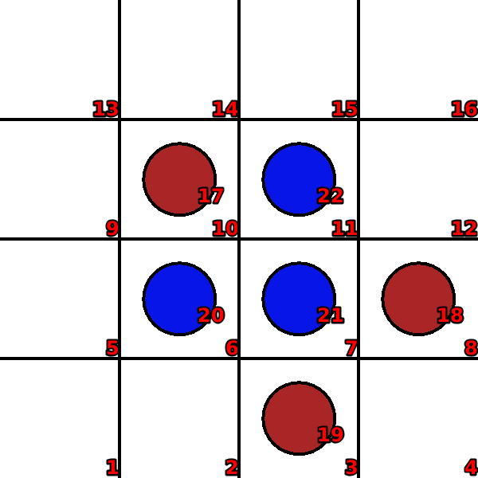
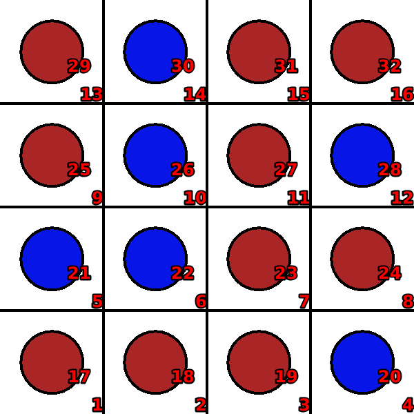
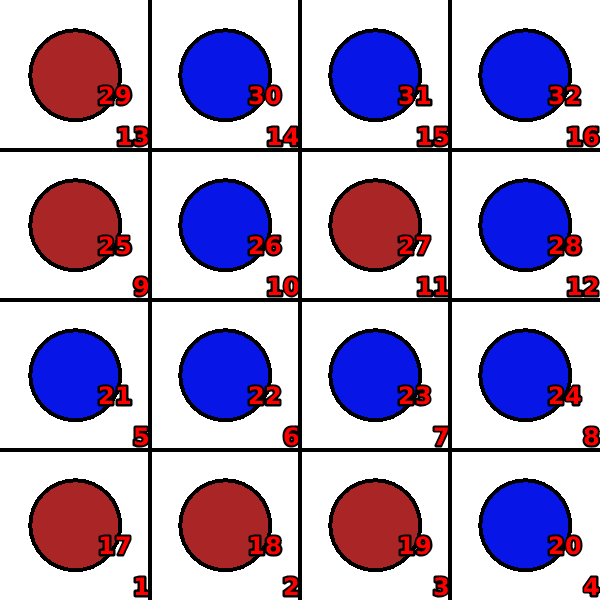

Mini-othello
Language: Teaching Script Entire Dialog
World states:
init-othello.world
final-othello.world
fail-othello.world
Primitive concepts used
Object types:
|
locations, blocks |
Colors:
|
red, blue
|
| Spatial relations: |
on, below, between |
| Functions: |
count of, less than |
Teaching Dialog (Rosie in bold)
TEACHER: The name of the game is othello.
Please setup the game.
TEACHER: Load init-othello.

Ok.
TEACHER: Ok.
Please describe the actions, goals, and failure conditions.
TEACHER: If the locations between a clear location and a captured location are occupied then you can move an available red block onto the clear location.
Please describe the meaning of 'available' in this context.
TEACHER: If a block is not on a location then it is available.
Ok, I've learned the meaning of 'available' for this context.
Please describe the meaning of 'captured' in this context.
TEACHER: If a location is below a red block then it is captured.
Ok, I've learned the meaning of 'captured' for this context.
Please describe the meaning of 'clear' in this context.
TEACHER: If a location is not below an object then it is clear.
Ok, I've learned the meaning of 'clear' for this context.
Please describe the meaning of 'occupied' in this context.
TEACHER: If a location is below a blue block then it is occupied.
Ok, I've learned the meaning of 'occupied' for this context.
I've learned the action.
TEACHER: Load final-othello.

Ok.
TEACHER: The goal is that all locations are covered and the number of captured locations is more than the number of occupied locations.
Please setup the goal state.
TEACHER: Ok.
Please describe the meaning of 'covered' in this context.
TEACHER: If a location is below an object then it is covered.
Ok, I've learned the meaning of 'covered' for this context.
I've learned the goal.
TEACHER: Load fail-othello.

Ok.
TEACHER: If all the locations are covered and the number of occupied locations is more than the number of captured locations then you lose.
Please setup the failure condition.
TEACHER: Ok.
I've learned the failure condition.
TEACHER: Done.
I've learned othello. Shall we play a game?
TEACHER: No.
Ok.